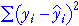

Sums of squares
For both the simple linear model and the linear model with two explanatory variables, the individual values can be split into components.

Their sums of squares satisfy a similar equation.

These sums of squares can be interpreted as follows:
| The total sum of squares describes the total variability of the response. | |
| The regression sum of squares describes the variability of the fitted values. This is the variability that is explained by the model. | |
|  | The residual sum of squares is a measure of the unexplained variability in the response. |
Coefficient of determination
The relative sizes of the regression and residual sums of squares reflect how well variation in the response is modelled by the explanatory variables — the overall strength of the relationship.
The proportion of the total variation that is explained by the two explanatory variables is called the coefficient of determination, R2,

The coefficient of determination is always between 0 and 1 and is interpreted in the same way as for models that were described in earlier chapters.
Unlike in the simple linear model, R2 cannot be interpreted
as the square of the correlation coefficient between y and x.
(It is however the square of the correlation coefficient between the response,
y, and the fitted values,  ).
).
Examples
The diagram below shows a few data sets, the corresponding sums of squares and the calculations for the coefficient of determination.
Use the pop-up menu on the lower right to display the different components on the scatterplots and on the dot plot on the right.
Use the pop-up menu at the top to change the data set. Observe that R2 is closest to 1 for data sets where the scatter of crosses is close to the least squares plane and the two planes (least squares plane and blue plane representing the mean) are furthest apart.